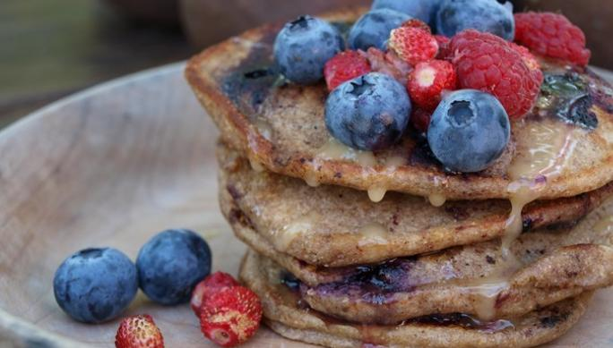

Blueberry Pancakes with Mead

Description
The wonderful summer berries will soon be ripe to pick and then why not have them with these delicious pancakes.
Add mead to the batter for sweetness, but be careful as the honey in the mead will caramelize on the hot pan. Everyone else
but the Vikings might choose to sweeten the batter with modern sugar instead.
Ingredients
- 1 cup rye flour
- 1 cup barley flour
- 1 cup wheat flour
- 1 teaspoon salt
- 2-3 cups milk
- 2 eggs
- 1/2 cup mead (4 tablespoons)
- 1 cup blueberries
- Extra berries for garnish; blackberries, raspberries, strawberries...
- Honey
Steps
- Mix the three types of flour, salt and milk, then add the eggs.
- Carefully fold in 1/2 cup blueberries and mead. Do not squash the berries.
- Place a frying pan over a fire, on the grill or use your cooker. Heat a good knob of butter until foaming.
- Drop a large spoonful of batter into the pan and cook. Turn over and continue cooking until golden.
- Serve the pancakes with honey and extra berries